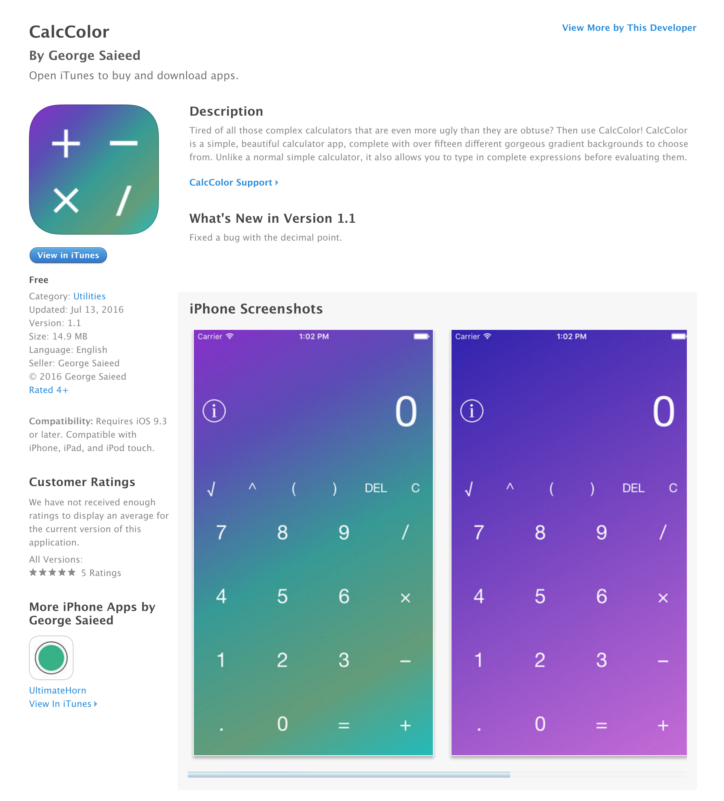
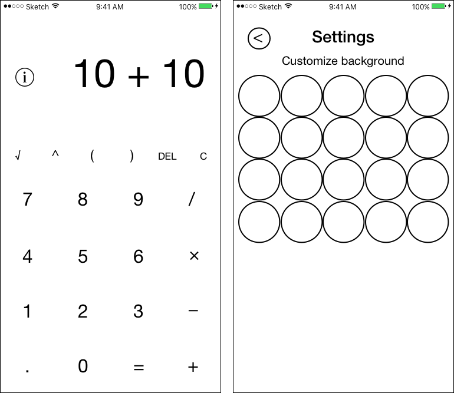
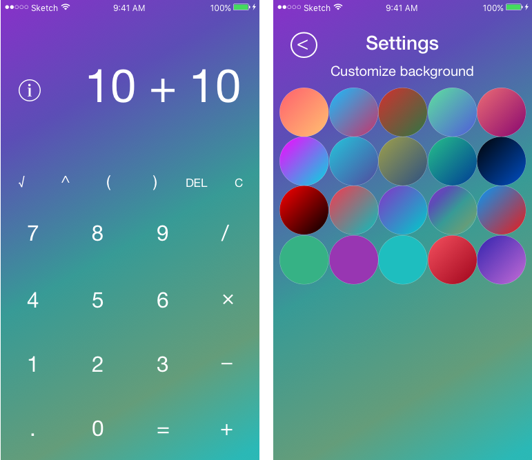
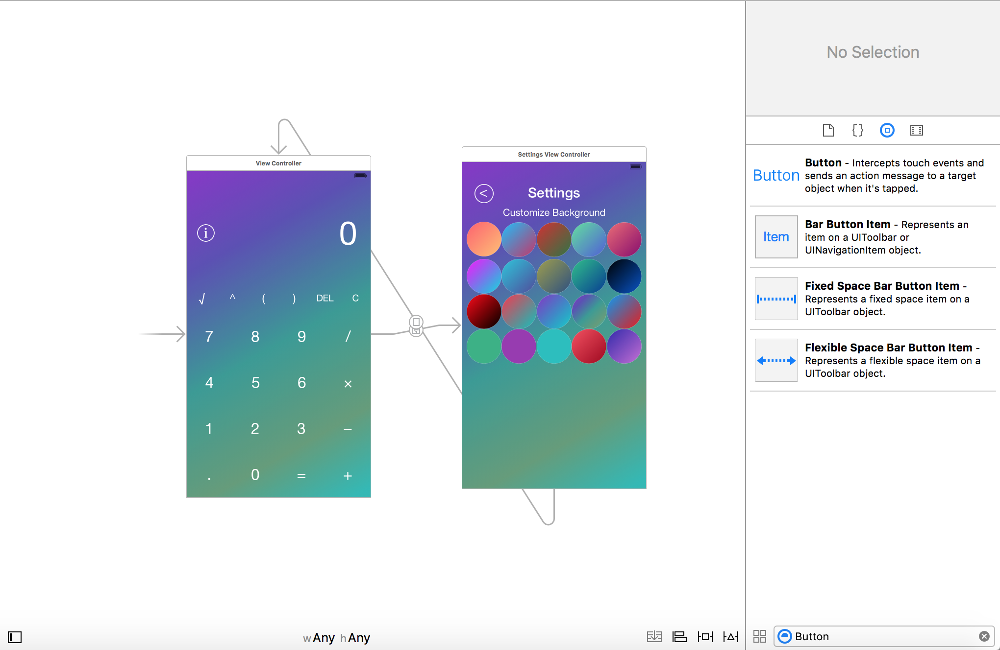
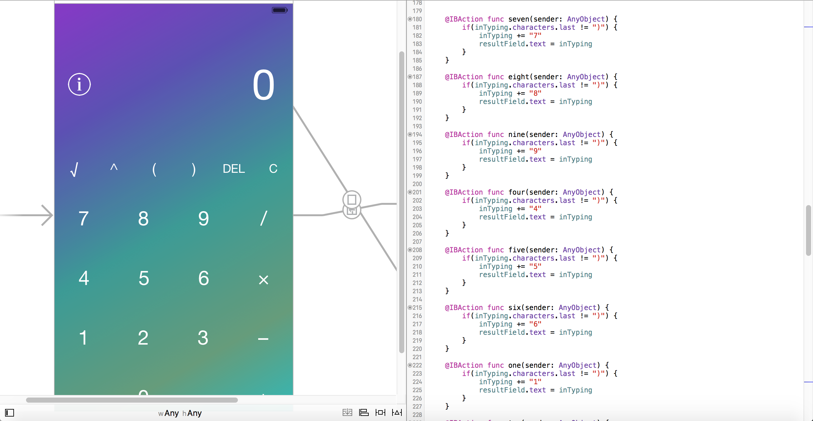
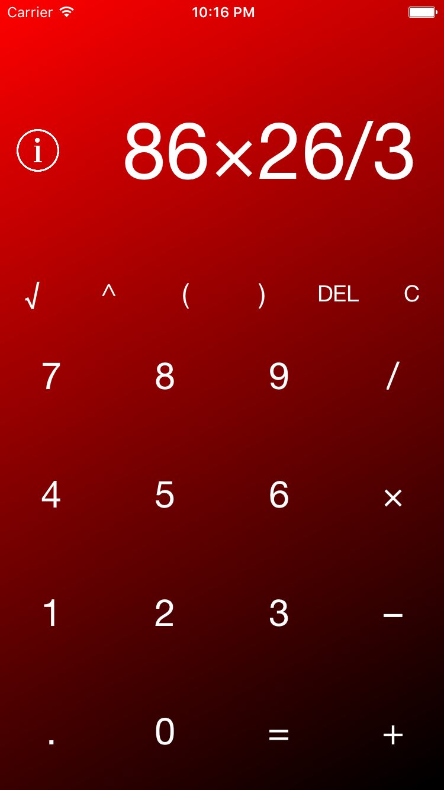

Introduction
Designing and developing a simple app is not as complicated as you would think. Here, I'll prove it to you. In this post, I'll walk you through the design and development process of CalcColor, an app I recently pushed to the Apple App Store. It's simple, I know, but that's part of why I created it (if you're only interested in how apps work in general, and couldn't care less about how I built a calculator, scroll down to 'How Apps Work').
 CalcColor on the Apple App Store.Planning
Now, on to the app building process. People like to think that those that build applications are geniuses who come up with ideas and then immediately sit down at the computer and start cranking out code, but nothing could be further from the truth. Most of the time, before even a single line of code is written, or any designs are made, everything needs to be planned out.
Like most independent developers, I began by thinking through what CalcColor needed/what would have to be done. Because of its extreme simplicity, this was pretty straightforward. I wanted to build a calculator that was simple, functional, and that looked decent, allowing the user some control over its appearance. I thus decided I'd allow the user to change the app's background. Simple.
For the actual calculator, I decided to keep it very basic, including the four basic operators (+, -, /, ×) and the ^ and √ operators. The next thing I had to decide was how the actual calculator would function. Would it be similar to the built-in iOS calculator app, which evaluates expressions number by number (i.e. you type in 25, then +, and the 25 disappears, allowing you to type in another number), or would it allow the user to type in the entire expression (i.e. you type in 25 + 5 - 7 * (25 * 4)) before evaluation? I eventually settled on the latter, to set CalcColor apart from the stock iOS calculator.
Having taken care of that question, I needed to decide on the app's appearance. Because gradients can make for good backgrounds, I decided to make most of the backgrounds available to the user gradient-based. Because I wanted the calculator to take up the entire phone screen, I decided to make the background selection on a separate page from the calculator. With regards to the calculator itself, I was aiming for a minimalistic design, so I decided to omit the traditional button borders, going for a calculator that contained no lines.
The Design Process
Having planned out the layout and features of the calculator, I needed to come up with some visual that would allow me to see what the end result might look like. For that, I used Sketch (quite possible the greatest designer's tool ever created). Similar to Photoshop, but significantly easier to use, Sketch allows you to draw various shapes and mess with their attributes in order to design what your web or mobile applications will look like before you begin coding them. And so I began 'drawing'.
 The Barebones DesignNow that I had a sketch of what I wanted the calculator to look like, I went ahead and added in color and decided what gradients I wanted to use.
 The Finished DesignAnd, vuala, there you have it. On to building it!
How Apps (and CalcColor) Work
Before I talk about the specifics of coding CalcColor, I'll talk about what you really came here wanting to know - how apps work (this doesn't really include games - they're a bit different, as they use some animation and often times certain engines such as Unity - but more on that in another post). Most apps are comprised of pages which contain buttons, tables, and navigation bars (the bars at the bottom or top of many apps that are present no matter what page you navigate to). The main page of CalcColor, for instance, is comprised of twenty-three different buttons. One is slightly different than the other twenty-two (the settings button), in that it has a different function, and there is also some text at the top of the app, for showing the user their calculator input as well as the output after they hit the equals button. In addition, there is an image in the background. The second page contains twenty-one buttons, along with an image, and two bits of text - but unlike on the main page, these pieces of text never need to be modified - they won't ever change.
So now we know what exactly our calculator app consists of. However, that doesn't explain how we get those buttons there, or how we make them do anything. Because this is an iOS app, XCode is the piece of software that allows us to answer these questions. In XCode, there is something called the storyboard. This is what allows us to view what items will be on our app pages, as well as add more items to those pages. It's basically a drag-and-drop system, and, while you can still forego the storyboard and do everything programmatically, it's much easier to just use the storyboard (I personally have never built an app without the storyboard). As you can see below, you can literally just search for a button, drag and drop it onto the storyboard, and change its text as you see fit. Among many other things, you can also add labels and text fields. Modifying the text in the buttons and labels is easy, as XCode allows us to simply double click them and change their text.
 The XCode StoryboardOkay, so we now have two pages with all the buttons and text we need (having simply dragged-and-dropped all those items and changed their text). We also dragged on something called an 'ImageView,' which is simply a fancy term for something that can contain an image of our choosing, and set the background to the default gradient that we wanted (exported as an image from Sketch earlier). If we run our app right now, however, we are presented with the default page (the calculator), and clicking the buttons do absolutely nothing - so our calculator is not functional, and we can't even get to the other page to change our background. This is clearly a problem, and that's what we'll fix next.
So how do we make our buttons function? We definitely want our user to be able to change the background, so let's start with making our 'settings' button function. How would this work? When the user taps the settings button (and this is a gross oversimplification), the screen of our phone sends our app a message that basically says 'Hey! The user tapped me! Do with that what you will.' So what we're going to do is make it so that when our app receives this message from the settings button, our app moves over to the other page. In XCode, how do we do this? We click the settings button, hold control, and drag over onto the other page, and we select Show (because we want clicking this button to show our page). And that's it! When you run the app, and you tap the button, the screen says, "Hey! I've been tapped," and so the app says, "Okay! I'm going to move the user to the other page you've linked this button to!" On this page, we have a back button, and we can do the exact same thing to ensure that the user can tap this button to return to the main page.
On to making our calculator function! The first thing we're going to do is link all of the stuff on our main page to our code. Let's start with the buttons that are our numbers. We can hold click our button, hold control once again, and drag over into our code. Doing so creates something called an action (you can ignore the @IBAction, func, and sender:AnyObject for now). Take the first action (seen below), seven (we linked the number seven button to this action). When seven is pressed, our screen tells our app, 'Hey! Seven was pressed!' When this happens, our app says, 'Cool! Make whatever action is connected to the seven button happen.'
 Linking StoryBoard Items to CodeSo now the app goes to do whatever we told it to do inside that action. For something like the seven button, what would we want it to do? Well, we'd want it to do two things. First, we'd want to show the user they'd clicked the number seven, by displaying a seven as text at the top of the calculator page. Next, we'd also want to save that number somehow (as the user is going to type more numbers and various operators, so we have to remember that the button seven was pressed so we can keep it for when they type more numbers, and for when they hit the equals button). So how do we make both of these happen?
Let's save the number first. How do we do that? Well, we create something called a String. A string is, well, a string of characters, which, somewhat obviously, are characters in the English language. These characters can be letters, numbers, and various symbols (like %, ^, and #). We thus create a string called inTyping (don't ask me why I named it that). Would we want to do this inside our action? No? Why not? Because if we did, every time we clicked the button seven, we would create a new string called inTyping, wiping away what inTyping used to hold. Thus, we'll do it at the beginning of our program (the actual line is var inTyping: String = "" - this tells our app that we are creating a string of characters called inTyping that is currently empty).
Okay, now we have a string called inTyping which can hold our seven. However, because the user will type several numbers and operators before he hits the equals button, we don't want to set that string equal to seven when the seven button is clicked - we want to ADD seven to that string, so if the user already typed five, hitting the seven button will give us a string of "57" instead of clearing the five and just giving us "7". How do we do that? Well, in our action for when the seven button is pressed, we use inTyping += "7". This is shorthand for inTyping = inTyping + "7", which is just saying, 'Hey, take the current value of inTyping and the number "7" to it' (add in the sense that it tacks 7 on to 5, such that "5" + "7" = "57" and not "12").
Excellent! So if we do this for all the buttons, when we click any button, it adds the character of that button onto the end of our string of characters. However, nothing is appearing at the top of the calculator! The number is still stuck on 0. This is because, while we've saved our string, we haven't told our app to display it. We need a way to tell our app to modify the text at the top of our calculator. How do we do this? Well, we click the text, click control, and drag over onto our code. This creates something called an @IBOutlet (again, don't worry about the actual meaning of this for now). Basically this tells our code, 'Look! There's some text in our app, and if we want to do anything at all with this text, we can just call the name (in this case resultField) that we assigned this text, and then we can do what we want with it!' So each time we add a new number or symbol to inTyping, we also want to update the text. So inside all the actions for our buttons, we can type resultField.text = inTyping. Simply put, every time we click any of our calculator buttons, the text of our resultField will be set equal to our string inTyping. Now, when we click the seven button, we save seven to our string (this has to be done first!), and display it up top in our calculator's text field.
From here, it's fairly straightforward what should be done. We do basically the exact same thing with the operators, so that if we click the "+" button, we save it to our string and display it. The same goes for the other operators. When we click the "=" button, we take the full string (for example, "5+7+9-3/6"), and tell the programming language we're using (in this case, Swift) to compute the result of that string. We then save that to inTyping and show it in our text field, clearing what was previously there. For the delete button, we delete the last character of inTyping and update our text field. For the clear button, we delete everything in inTyping and set our text field to zero.
 The Calculator as we click buttonsFor the backgrounds, we do the same thing - we create actions in our code for each individual background button, and when that specific button is clicked, we tell our app to change the background on both pages to that background. Because we probably want to remember what background was selected even if the user leaves the app, we also save that background somewhere in the app where it stays even if the user quits the app. And really, that's basically it!
Conclusion
If you realized that there would be several major problems with CalcColor if this is all we did to build it, then you're well on your way to thinking like a programmer. For one, we can currently type any of the numbers and operators in any order as many times as we like. For example, we could type "77...+++-/)". This makes no sense, obviously, and if we allow the user to hit the equal button having typed this in, our app will crash - our programming language doesn't know how to compute expressions that aren't valid. We would also need to make sure all of our parentheses match. In addition, the square root operator (√) and the multiplication operator (×) can't be read as part of our expression when being calculated either - we have to replace them with "sqrt" and "*" respectively. Lastly, because of the way Swift works, if the user were to type in "3/4" or 5/3, he would get an answer of "0" and 1, respectively. Why? Because (and again, this is a gross oversimplification) if both numbers don't have decimal points, Swift thinks our answer shouldn't have decimal points either, and so it immediately rounds down our result (even "1.99" would be rounded down to "1"). Clearly, we can't have this happen either. I'm not going to tell you how exactly I solved these problems, but if you're interested, try and solve them! You don't have to come up with the code required to solve them, but rather think through the logic required to solve them (i.e. if the user has typed a decimal point, then we don't want them to be able to hit the decimal point again, at least until they click an operator button). If you're really geeky (like me), feel free to email me with how you'd solve some of these problems!